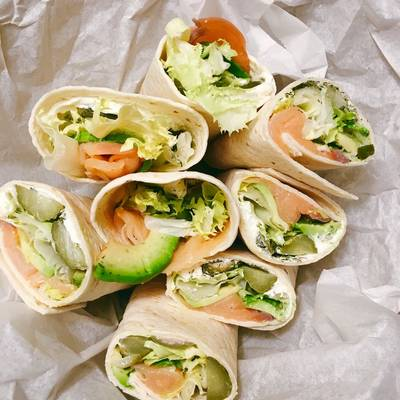

Asian Salmon Wrap

Description:
Moving around a lot, I find that cities often do not share the same restaurants.
I lived in Seattle for a few years, and am now in Pensacola, FL. I missed the Samurai
Salmon Wrap from World Wrapps.
This is my effort for re-creating this taste sensation. It's a wrap with a fabulous
Japanese-Asian flavor and a blend of textures to savor.
Ingredients:
- 2 green onions, chopped
- 1/3 cup thinly julienned daikon
- 1/3 chopped cucumber
- 1 tablespoon rice wine vinegar
- 1 tablespoon soy sauce
- 1/4 teaspoon wasabi paste
- 1/8 teaspoon ground ginger
- 2 flour tortillas
- 1 cup of cooked white rice
- 2/3 cup canned salmon, drained
- 2 teaspoons of sesame seeds
Steps:
- Toss together the green onion, daikon radish, and cucumber in a small bowl. In a separate
bowl, whisk together the rice wine vinegar, soy sauce, wasabi paste, and ground ginger.
- Lay to two tortillas onto a flat surface. Divide the rice and place in the center of each tortilla.
Top each portion of rice with half of the salmon and half of the vegetable mixture.
- Drizzle half of the soy sauce mixture over each portion of vegetables. Sprinkle each with 1
teaspoon sesame seeds. Wrap the edges of the tortillas around the filling completely to serve.
Click here to return